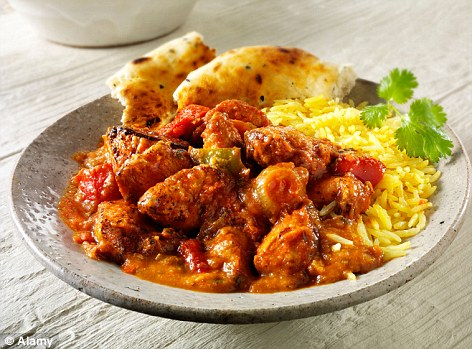
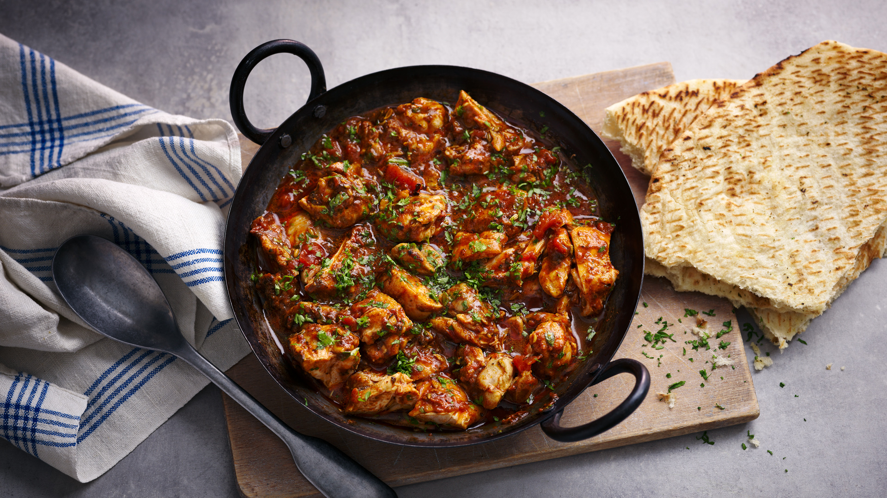
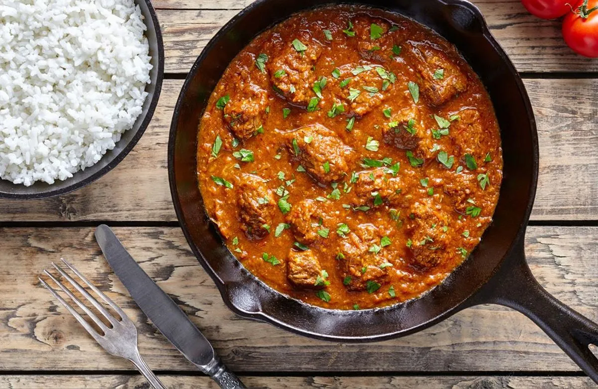
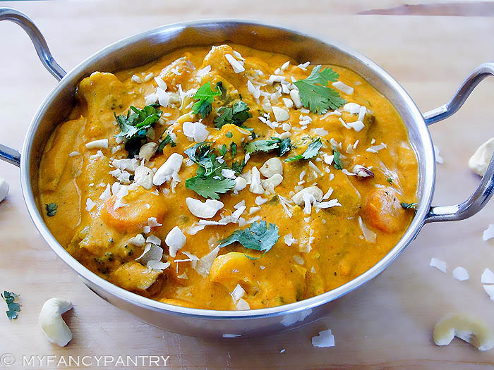
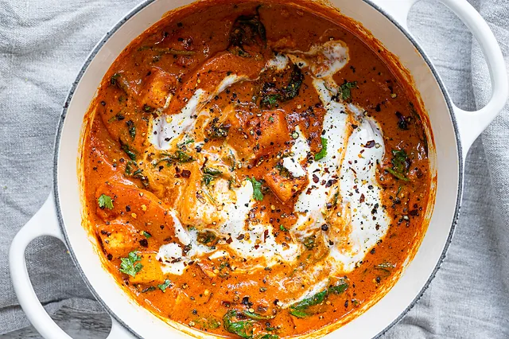

masala
Masala is a popular dish in many Indian restaurants and is a favorite of home cooks as well. It is a great way to add a burst of flavor and complexity to any meal. The spices used in a masala are what give it its unique flavor that is sure to tantalize the taste buds.
jalfrezi
The jalfrezi is a medium-hot, spicy dish with a thick, flavourful sauce. This dish is usually served with plain boiled rice, chapatis, or parathas. It is a great way to incorporate vegetables into a meal while also getting a delicious and unique taste.
bhuna
Bhuna curry is known for its intensely flavourful and aromatic qualities, as well as its deep, dark red color. This type of curry is often served with rice, naan bread, or other accompaniments. It can also be used as a marinade to give other dishes a flavourful kick. Bhuna curry is a favorite among curry lovers and can be found in many Indian restaurants and homes.
vindaloo
Vindaloo is a popular Indian curry dish that is usually made with a combination of red chili peppers, vinegar, garlic, ginger, and a variety of spices. The name “vindaloo” is derived from the Portuguese dish carne de vinha d'alhos, which translates to “meat with garlic and wine”.
korma
Korma is a traditional Indian dish that can be made with a variety of ingredients. Typically, it is a mild, creamy curry made with yogurt, cream, or coconut milk and a range of spices. It can be cooked with either meat, vegetables, or a combination of both. Depending on the region, it can also contain nuts, dried fruits, or even sweeteners like sugar or honey.
paneer
Paneer curry is a popular dish in Indian cuisine made with cubes of paneer, a type of Indian cheese, cooked in a rich and creamy tomato-based gravy. The paneer cubes are soft and melt in your mouth, and soak up all the flavors of the curry. Paneer curry is a vegetarian dish and can be enjoyed with steamed rice or Indian bread such as naan or roti.